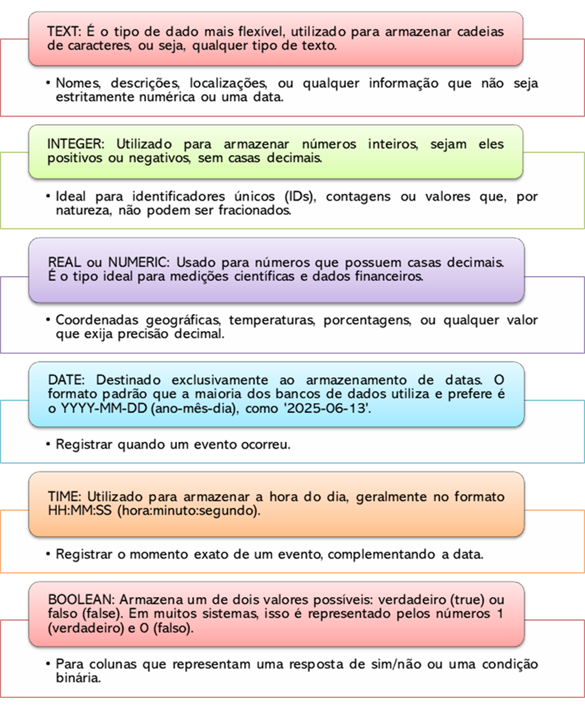

Capítulo 4: Fundamentos do SQL
Nos capítulos anteriores, exploramos a criação e o gerenciamento de bancos de dados através das interfaces visuais do QGIS, com foco no formato GeoPackage. Aprendemos a criar camadas, adicionar campos e a organizar nossos projetos. Agora, daremos um passo fundamental que separa o usuário de um software do verdadeiro gestor de dados geográficos: aprenderemos a nos comunicar diretamente com o banco de dados usando sua própria linguagem.
Neste capítulo, vamos mergulhar na linguagem que move praticamente todos os bancos de dados relacionais do mundo: o SQL. Nosso objetivo é que você adquira autonomia para criar, consultar, manipular e gerenciar dados de forma estruturada e eficiente. Começaremos com os conceitos essenciais, como os tipos de dados e os subconjuntos de comandos (DDL, DML, DQL), e avançaremos de forma prática para construir e extrair informações valiosas de nossas tabelas, sempre conectando o aprendizado ao fluxo de trabalho real de um técnico em geoprocessamento no QGIS.
4.1 Introdução Geral ao SQL: A Linguagem dos Dados
Até agora, interagimos com os dados geográficos principalmente através de interfaces gráficas, como as do QGIS. Essas ferramentas são excelentes para visualização, edição manual e muitas análises. Contudo, para se tornar um profissional completo em geoprocessamento, é preciso ir além dos cliques e aprender a "conversar" diretamente com o banco de dados. A linguagem para essa conversa é o SQL.
SQL significa Structured Query Language, ou Linguagem de Consulta Estruturada. É o idioma universal para gerenciar e consultar informações em bancos de dados relacionais, como o SQLite (a base do GeoPackage) e o PostgreSQL/PostGIS.
Dominar o SQL oferece duas vantagens transformadoras para um técnico em geoprocessamento:
· Precisão e Poder Analítico: Enquanto uma interface gráfica oferece um "cardápio" limitado de operações, o SQL permite que você faça perguntas complexas e específicas que seriam impossíveis de outra forma. Você deixa de ser um mero operador de software para se tornar um analista que extrai insights precisos dos dados, sem intermediários.
· Eficiência e Automação para Grandes Volumes de Dados: O mundo real do geoprocessamento envolve lidar com milhares ou milhões de feições. Atualizar manualmente um atributo em 1.000 registros é inviável. Com um único comando SQL, essa tarefa é executada em segundos. O SQL é a base para a criação de rotinas automáticas (scripts), para a garantia da qualidade dos dados em larga escala e para o gerenciamento de projetos robustos e multiusuários, superando definitivamente as limitações de arquivos como o Shapefile.
Neste capítulo, você aprenderá os fundamentos desse poderoso idioma, o que representa um salto fundamental na sua capacidade de gerenciar informação geográfica de forma profissional, eficiente e escalável.
4.2 Tipos de Dados em SQL
Antes de criar uma tabela ou inserir qualquer informação em um banco de dados, precisamos definir qual o tipo de dado que cada coluna irá armazenar. Pense nisso como organizar uma mudança: você não guarda líquidos em caixas de papelão nem objetos frágeis em sacos de qualquer jeito. Cada item exige um recipiente adequado. No SQL, a lógica é a mesma: cada coluna é projetada para um tipo específico de informação, garantindo que os dados sejam armazenados, processados e recuperados de forma correta e eficiente.
A escolha do tipo de dado correto é um passo fundamental na modelagem do banco, pois impacta diretamente a integridade dos dados, o desempenho das consultas e o tipo de operação que se pode realizar. Não é possível, por exemplo, calcular a média de uma coluna definida como texto. A seguir, apresentamos os tipos de dados mais comuns que utilizaremos em nossos projetos de geoprocessamento.
Principais Tipos de Dados:

4.3 Restrições de Integridade: Garantindo a Qualidade dos Dados
Agora que sabemos como definir o tipo de informação que cada coluna irá guardar, precisamos estabelecer as regras do jogo. Em um banco de dados, essas regras são chamadas de restrições de integridade (constraints). Elas funcionam como "guardas" que impedem a inserção de dados inválidos ou inconsistentes, assegurando que a base de dados se mantenha confiável, organizada e lógica ao longo do tempo.
A aplicação de restrições é uma das práticas mais importantes na modelagem de um banco de dados profissional. Elas garantem que, independentemente de quem ou de qual software esteja inserindo os dados, as regras fundamentais do projeto serão sempre respeitadas. Vamos conhecer as principais restrições utilizadas em SQL.
Principais Restrições de Integridade
· NOT NULL (Não Nulo)
o O que faz: Garante que uma coluna não pode conter valores nulos (vazios). O preenchimento daquele campo se torna obrigatório para cada novo registro inserido na tabela.
o Quando usar: Em colunas cuja informação é essencial para o registro fazer sentido.
o Exemplo prático: Na nossa tabela relatorio_balneabilidade, as colunas data_coleta e resultado_ecoli deveriam ser NOT NULL, pois um relatório de balneabilidade sem a data da coleta ou sem o resultado da análise não possui valor.
· UNIQUE (Único)
o O que faz: Assegura que todos os valores em uma determinada coluna sejam diferentes uns dos outros. Nenhuma duplicação é permitida.
o Quando usar: Para campos que funcionam como um identificador que não pode se repetir, como o CPF de uma pessoa, o email de um usuário ou um código de protocolo para uma amostra.
· PRIMARY KEY (Chave Primária)
o O que faz: É a restrição mais importante. Ela designa uma coluna (ou um conjunto de colunas) como o identificador único e principal de cada linha da tabela. Uma chave primária é, por definição, UNIQUE e NOT NULL.
o Quando usar: Toda tabela bem modelada deve ter uma chave primária. Ela é o "RG" de cada registro, permitindo que o banco localize, atualize ou remova uma linha específica com máxima eficiência. É também a base para criar relacionamentos com outras tabelas.
o Exemplo prático: O ideal para a nossa tabela relatorio_balneabilidade seria adicionar uma coluna, como id_relatorio do tipo INTEGER, e defini-la como PRIMARY KEY.
· FOREIGN KEY (Chave Estrangeira)
o O que faz: Cria um vínculo lógico entre duas tabelas, garantindo a integridade referencial. Uma chave estrangeira em uma tabela "aponta" para a chave primária de outra tabela.
o Quando usar: É o pilar dos bancos de dados relacionais. Ela garante, por exemplo, que não seja possível registrar um relatório de medição para um ponto de coleta que não existe na tabela de locais.
o Exemplo prático: Se a nossa tabela locais_coleta tivesse uma chave primária id_ponto, poderíamos adicionar uma coluna id_ponto_fk na tabela relatorio_balneabilidade e defini-la como uma FOREIGN KEY que referencia a tabela locais_coleta.
· CHECK (Verificar)
o O que faz: Permite definir uma regra ou condição personalizada que o valor de uma coluna deve satisfazer para ser aceito.
o Quando usar: Para aplicar regras de negócio específicas que não são cobertas por outras restrições.
o Exemplo prático: Poderíamos usar a restrição CHECK na coluna resultado_ecoli para garantir que o valor inserido seja sempre positivo ou zero (resultado_ecoli >= 0). Outro exemplo seria na coluna mare, para permitir apenas os valores 'Alta', 'Baixa' ou 'Reponto'.
A compreensão destas restrições é fundamental. Embora no QGIS possamos configurar formulários e domínios para guiar o preenchimento, as restrições SQL são mais robustas, pois são aplicadas diretamente no banco de dados, valendo para qualquer forma de acesso.